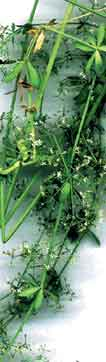

Arbeitsblätter fürs Papier |
webaktive Übungen |
visuelle Kommunikation |
Links |
wir |
Home |
|
Diplom-Designerin Buchdesign und Typografie in einem Berliner Verlag Magazindesign und auch Typografie in Duisburg heute Gestaltung und wieder Typografie von Lernmaterial für das Verbundstudium an Fachhochschulen NRWs (ein berufsbegleitendes Fernstudienmodell) Distance- und online-lernen werden zu neuen Arbeitsbereichen für Gestalterinnen oder Informationstrateginnen - als solche sollten Gestalterinnen agieren können. Dem Lernen
angemessene Gestaltung ist in den pädagogischen Bereichen tendenziell
ein Fremdwort. |
Ulrike Borinski | ||||
|  | |||||